| 日付 | 2015年4月26日（日） |
|---|---|
| 山域 | 谷川 |
| メンバー | 家族（妻、長女・4歳、長男・1歳） |
| 山行形態 | 子連れ日帰り |
| アクセス | 車 |
| ルート (Map) | 駐車場 (8:27) - (8:49) ゲート - (9:44) マチガ沢 - (10:17) 一ノ倉沢 (11:23) - (13:04) 駐車場 |
谷川岳の東側は急峻な崖が連なっている。
特に一ノ倉沢の岩壁は、多くのクライマーが挑戦する岩場で非常に有名である。
雪に覆われた冬の一ノ倉沢を一度見てみたいと思っているのだが、
この辺りは積雪が多いため、岩壁を眺めるだけでも結構難しい。
春になりアプローチが容易になったため、残雪の谷川岳を眺めに行くことにする。
白毛門の登山口にある駐車場に車を停めようと考えていたが、雪に覆われていて停められなかった。
その先に別の駐車場があったため、そこに車を停めることにする。

駐車場の隅には、除雪した雪が大きな山になっている。
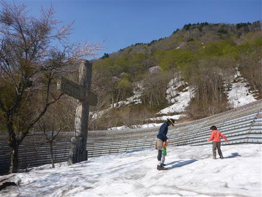
しばらく車道を歩くと谷川岳ロープウェイの乗り場が見えてくる。
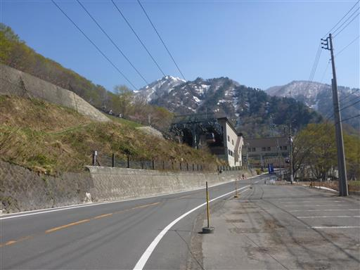
上の方は完全に雪に覆われている。乗り場では冬山の登山者やスノーボーダーを見かける。
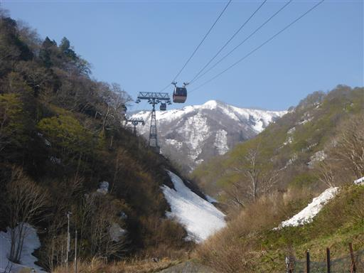
登山指導センターの側には水場があり、冷たい水が豊富に出ている。
ここにゲートがあり、ここから先は冬季通行止めだ。
かつては車で一ノ倉沢まで行けたのだが、現在では夏でも環境に配慮して通行禁止になっている。
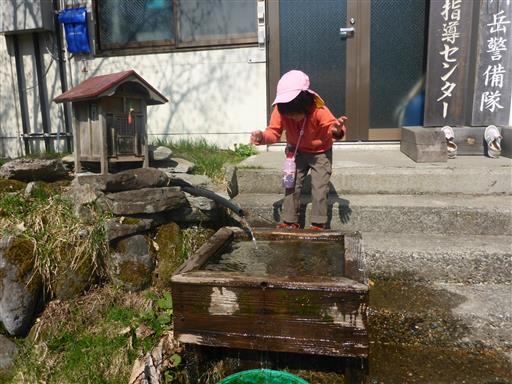
大きな除雪車が停まっている。
冬季通行止めなのに、有難い事に除雪はされているようだ。
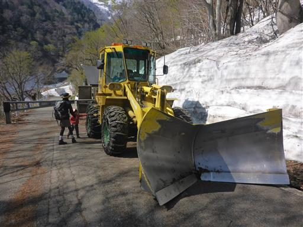
巨大な雪の壁。立山の雪の壁が有名だが、こんな場所で見られるとは思わなかった。
高さ2mくらいはあり、なかなかの迫力だ。
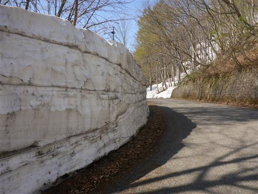
山の斜面はまだまだ豊富に残雪が残っている。
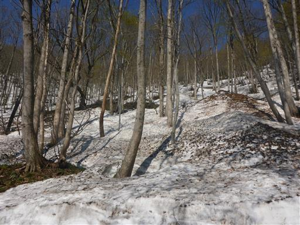
今日も息子の歩きたい欲求が炸裂したため、キャリアから下ろしてあげる。
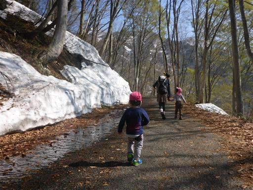
早速、雪解け水で遊んでいる。
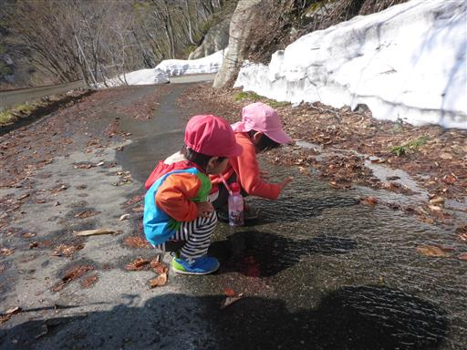
雪と新緑のコントラストが美しい。
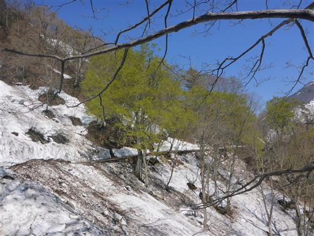
足元にはフキノトウが頭を出している。この辺りはまだまだ早春だ。
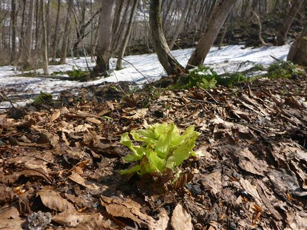
沢筋は上から雪が落ちてきそうだ。
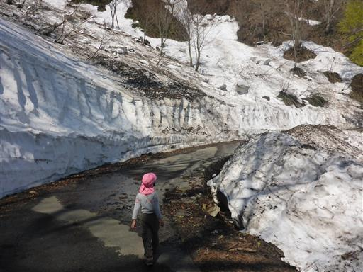
穴の開いた雪。なぜこのような形に解けるのだろう？
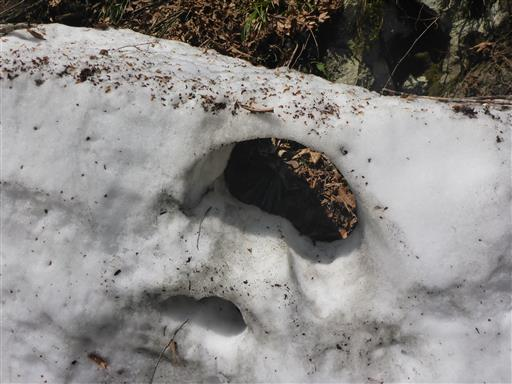
マチガ沢に到着。迫力ある景色だ。
以前谷川岳に登った時はこの沢を登って行った。

足元にはスノーブリッジの下を水が激しく流れている。
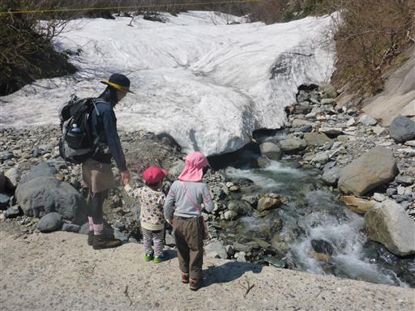
振り返ると白毛門が聳えている。白毛門は谷川岳の絶好の展望台だ。
いつか白毛門から冬の谷川岳を眺めてみたいものだ。
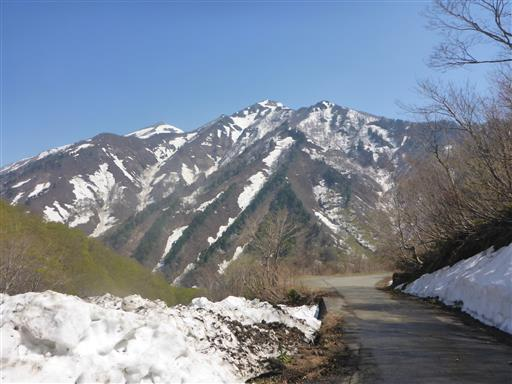
辺りは淡い緑色の新緑に包まれている。
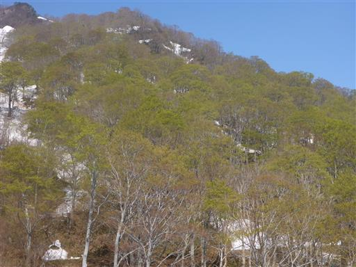
樹木の向こうに真白な清水峠方面が見えている。そこを越えると新潟だ。
この道はかつて清水峠を越えて新潟まで通じていたが、今では崩壊してしまっている。
そのため、現在では一ノ倉沢までの観光道路という位置づけになっている。
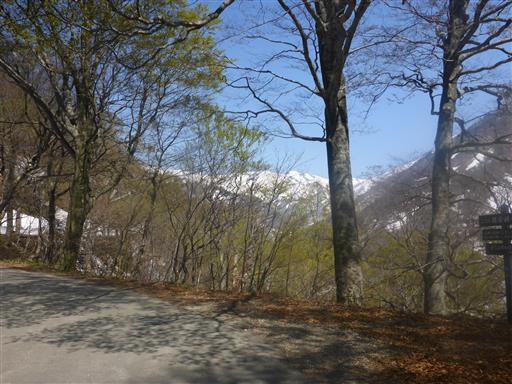
斜面の雪が崩れて道路に散らばっている。雪の塊が直撃すると危ない。
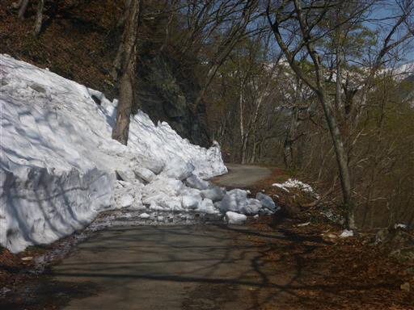
ここにも除雪車が停まっている。こちらはローラータイプだ。
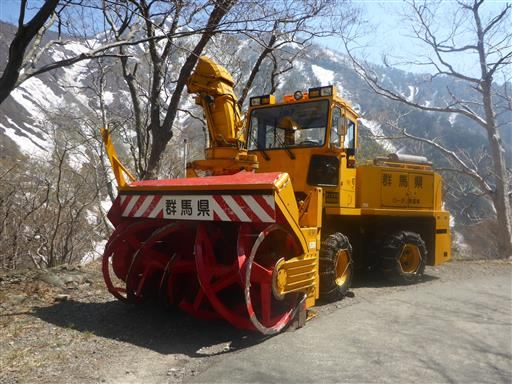
途中で除雪がなくなってしまう。道路は雪に覆われてしまったが、一応歩ける。
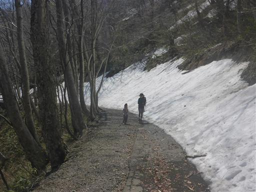
最後は雪の上を歩く。一ノ倉大岩壁が間近に迫ってくる。
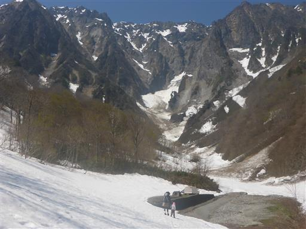
一ノ倉沢に到着。景色が良いため腰を下ろして昼食をとる。しばらくすると次々と人がやって来る。
車道ではほとんど人と会わなかったが、なかなか人気のコースみたいだ。
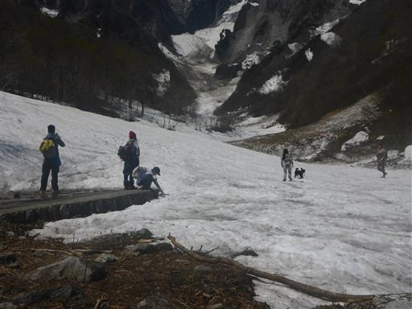
食後は雪の上で遊ぶ。
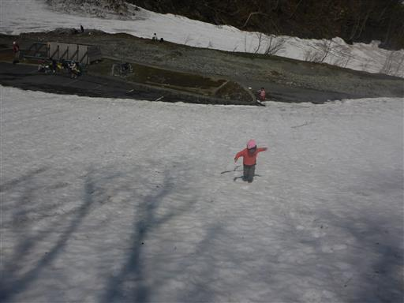
登山禁止と書かれている。
この季節は雪解け時期で危険なため、登山は禁止されているようだ。
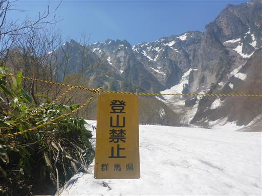
もう少し白い景色が見られると思っていたが、案外雪が少ない。
それでも間近に迫る岩壁は大迫力だ。
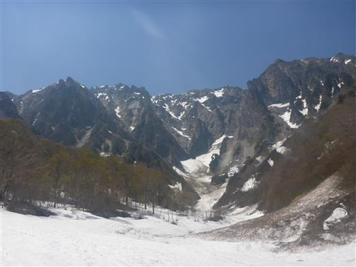
本日はもう少し先に進んだ後、川沿いのコースを戻る周回コースを予定している。
汚い残雪の山を越えて先に進む。
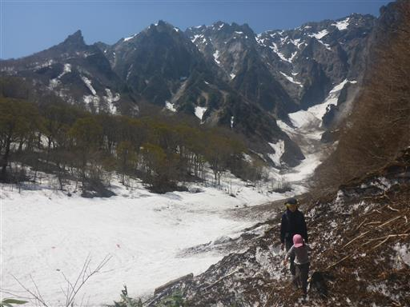
遭難者のレリーフが並んでいる。谷川岳は遭難死者数のワールドレコードを持つ山。
この岩壁で多くのクライマーが亡くなったのだろう。
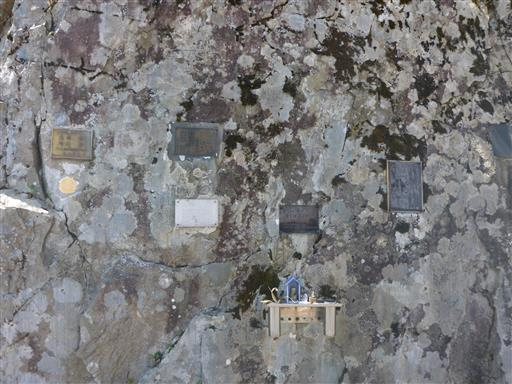
しばらく進むと道は残雪に閉ざされる。
雪道の登り下りはともかく、斜面に対して水平に歩くのは娘には難しいようだ。
木などの障害物も多いため、あきらめて引き返すことにする。
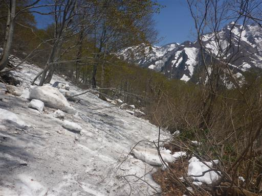
少々つまらないが、再び車道を歩いて駐車場に向かう。
道端でヘビが昼寝をしている。
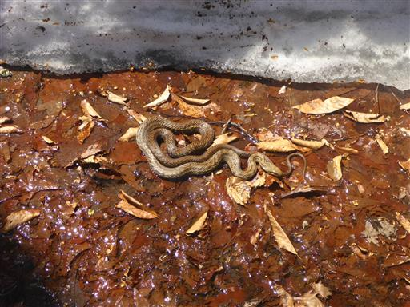
緑色の幹の木。こんな色の木を始めて見た。
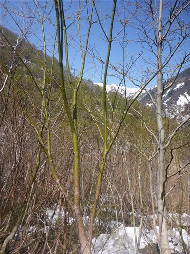
眼下に湯檜曽川が見える。水の色が美しい。
予定ではあの川沿いを歩いていたはずなのだが…

昼になって雪解け水は朝より増えている。
息子の靴は防水でないため、水が流れている場所は抱っこして通過する。
しかし水で遊びたいようで、足をバタバタさせて抵抗している…
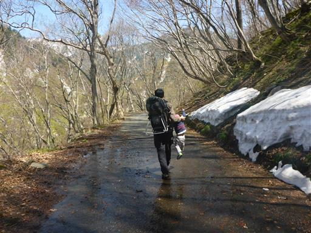
コースが予定より短くなったため、今日も時間は余り気味。
のんびりと下っていく。
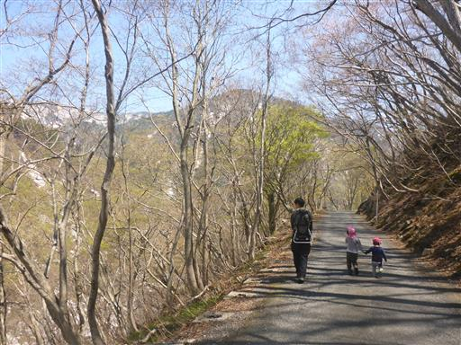
雪はものすごい速度でどんどん解けている。
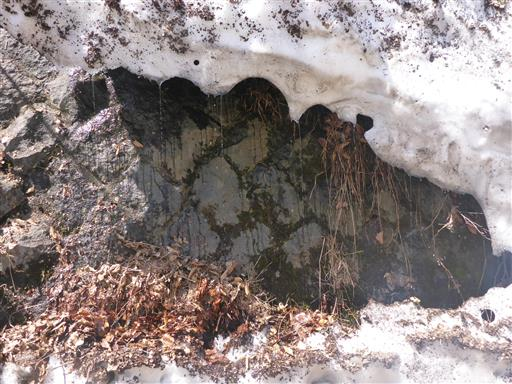
ロープウェイ乗り場近くの川沿いで小休止してから帰る。
コースは短かったが、素晴らしい展望を満喫できた山歩きだった。
子供たちは景色に無関心だったが、久々に雪遊びができて楽しかったようだ。
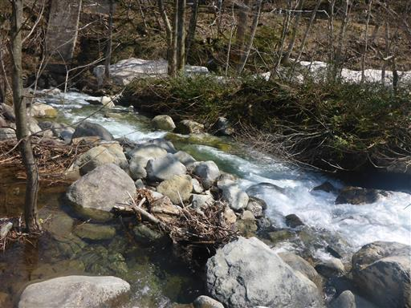